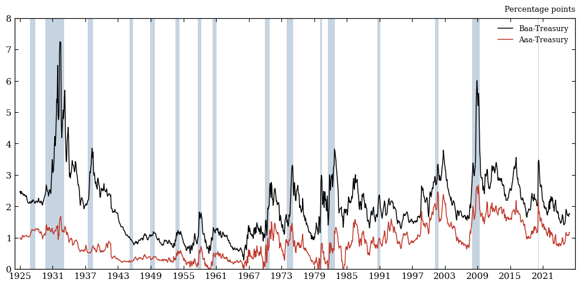
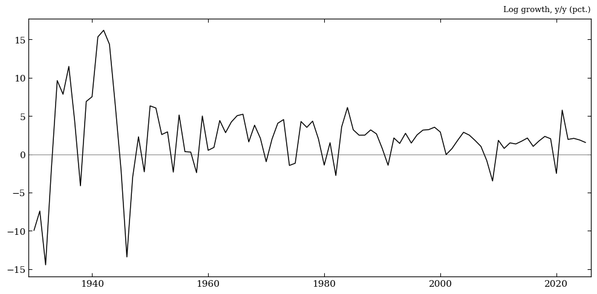
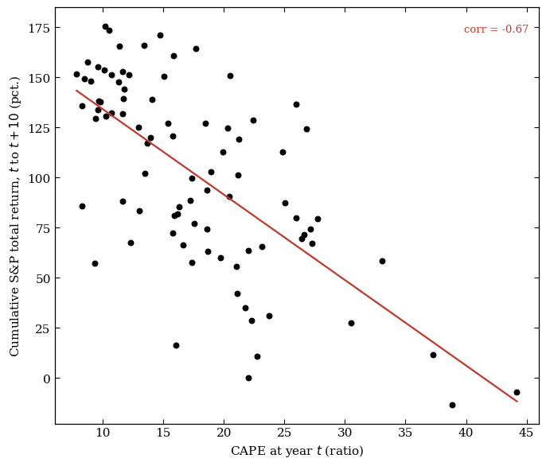

Data Walkthrough & Summary Statistics#
This notebook is a guided tour of the four processed data files that feed the whole replication pipeline, before any regression is run. For each file we cover where the data comes from, what we use it for downstream, and summary statistics and a chart.
# |
File |
Frequency |
Feeds |
|---|---|---|---|
1 |
|
Monthly |
Figure I |
2 |
|
Annual |
Table I / II |
3 |
|
Annual |
Table II |
4 |
|
Annual |
Table I / II |
import sys
from pathlib import Path
import matplotlib.pyplot as plt
sys.path.insert(0, str(Path.cwd().parent / "src"))
import summary_statistics as ss
from settings import config
PROCESSED_DATA_DIR = Path(config("PROCESSED_DATA_DIR"))
OUTPUT_DIR = Path(config("OUTPUT_DIR"))
data = ss.load_data()
for name, df in data.items():
print(
f"{name:>12}: {df.shape[0]:>5} rows x {df.shape[1]} cols, {df.index.min()} to {df.index.max()}"
)
fred_annual: 97 rows x 10 cols, 1929 to 2025
fred_monthly: 1212 rows x 6 cols, 1925-01-01 00:00:00 to 2025-12-01 00:00:00
ghy: 97 rows x 3 cols, 1929 to 2025
shiller: 97 rows x 5 cols, 1929-12-31 00:00:00 to 2025-12-31 00:00:00
FRED Monthly Series#
Source: FRED (Federal Reserve Economic
Data), pulled via pandas_datareader in pull_fred.py,
then cleaned to a continuous monthly series by process_fred_data_monthly.py.
The underlying FRED series are Moody’s Seasoned
Baa/Aaa Corporate Bond Yield (BAA, AAA), a spliced long-term Treasury
yield (GS10 plus two historical pre-1953 extensions), and the NBER
recession indicator (USREC).
Used for: this is the data behind Figure I, the paper’s opening exhibit — the Baa-Treasury credit spread, 1925-present. We use the Aaa-Treasury credit spread for the Figure I in the extension.
fred_monthly = data["fred_monthly"]
fred_monthly.info()
<class 'pandas.core.frame.DataFrame'>
DatetimeIndex: 1212 entries, 1925-01-01 to 2025-12-01
Data columns (total 6 columns):
# Column Non-Null Count Dtype
--- ------ -------------- -----
0 hist_recession_indicator 1212 non-null int64
1 Treasury_10yr 1212 non-null float64
2 BAA 1212 non-null float64
3 BAA_Treasury_spread 1212 non-null float64
4 AAA 1212 non-null float64
5 AAA_Treasury_spread 1212 non-null float64
dtypes: float64(5), int64(1)
memory usage: 66.3 KB
Summary Statistics#
The Baa-Treasury spread averages just under 2 percentage points but has a fat right tail — the max exceeds 7pp — because spreads spike (not fall) in stress episodes; that skew is exactly what Figure I is built to show. The Aaa spread’s minimum is slightly negative, a reminder that “Aaa” and the 10-year Treasury aren’t perfectly comparable at every date. About a sixth of months in the sample are NBER recessions — that’s the shading used in the chart below.
ss.summary_dataframe(fred_monthly, ss.FRED_MONTHLY_SPECS).style.format(precision=2)
| Units | Mean | Std. Dev. | Min | Q1 | Median | Q3 | Max | |
|---|---|---|---|---|---|---|---|---|
| Variable | ||||||||
| Baa-Treasury spread | pp. | 1.98 | 0.95 | 0.29 | 1.23 | 1.92 | 2.48 | 7.24 |
| Aaa-Treasury spread | pp. | 0.88 | 0.54 | -0.17 | 0.39 | 0.81 | 1.23 | 2.68 |
| Baa corporate bond yield | pct. | 6.75 | 2.87 | 2.94 | 4.80 | 6.01 | 8.34 | 17.18 |
| Aaa corporate bond yield | pct. | 5.64 | 2.71 | 2.14 | 3.57 | 4.74 | 7.36 | 15.49 |
| 10-year Treasury yield | pct. | 4.77 | 2.75 | 0.62 | 2.65 | 3.92 | 6.29 | 15.32 |
| Months in NBER recession | pct. of months | 16.58 | 37.21 | 0.00 | 0.00 | 0.00 | 0.00 | 100.00 |
Featured Data Chart#
Both spreads are plotted together, with NBER recessions shaded — this is the raw material for Figure I in the paper. Every recession bar lines up with a spread spike, and Baa is consistently wider than Aaa (the “quality gap” the paper exploits): the two credit spreads move together, but not by the same amount.
fig = ss.build_credit_spreads_figure(fred_monthly)
plt.show()

FRED Annual Series#
Source: the same FRED pull as above, aggregated to annual frequency by
process_fred_data_annual.py. Real GDP and population are built from FRED’s
annual/quarterly series (GDPCA/GDPC1, POPH/B230RC0Q173SBEA); CPI
inflation is the December-to-December log change in CPIAUCNS; bond and
Treasury yields are December values of the monthly series from Section 1.
Used for: GDP_per_capita growth and the spreads are key dependent variables
throughout Tables I and II; the treasury yields and
inflation columns are the control regressors in Tables I and II.
fred_annual = data["fred_annual"]
fred_annual.info()
<class 'pandas.core.frame.DataFrame'>
Index: 97 entries, 1929 to 2025
Data columns (total 10 columns):
# Column Non-Null Count Dtype
--- ------ -------------- -----
0 GDP 97 non-null float64
1 Population 97 non-null float64
2 GDP_per_capita 97 non-null float64
3 CPI_inflation 97 non-null float64
4 BAA 97 non-null float64
5 AAA 97 non-null float64
6 Treasury_10yr 97 non-null float64
7 Treasury_3mo 97 non-null float64
8 BAA_Treasury_spread 97 non-null float64
9 AAA_Treasury_spread 97 non-null float64
dtypes: float64(10)
memory usage: 8.0 KB
Summary Statistics#
Real GDP per capita ranges from about $7,000 to $69,000 over the sample — a century of growth compressed into one column. The wide gap between each yield/spread row’s mean and its quartiles echoes the same right-skew seen in the monthly spreads above: most years look “normal,” and a handful of stress years pull the mean and max well above the median.
ss.summary_dataframe(fred_annual, ss.FRED_ANNUAL_SPECS).style.format(precision=2)
| Units | Mean | Std. Dev. | Min | Q1 | Median | Q3 | Max | |
|---|---|---|---|---|---|---|---|---|
| Variable | ||||||||
| Real GDP | $tn | 8.68 | 6.72 | 0.88 | 2.88 | 6.68 | 14.23 | 23.85 |
| Population | millions | 223.72 | 69.56 | 121.72 | 159.57 | 220.29 | 285.23 | 341.94 |
| Real GDP per capita | $000s | 33.30 | 18.08 | 6.99 | 18.14 | 30.34 | 49.92 | 69.75 |
| CPI inflation (Dec/Dec) | pct. | 3.03 | 3.77 | -10.84 | 1.49 | 2.71 | 4.00 | 16.66 |
| Baa corporate bond yield | pct. | 6.82 | 2.92 | 3.10 | 4.81 | 6.15 | 8.43 | 16.55 |
| Aaa corporate bond yield | pct. | 5.65 | 2.72 | 2.26 | 3.51 | 4.74 | 7.25 | 14.23 |
| 10-year Treasury yield | pct. | 4.77 | 2.72 | 0.93 | 2.51 | 4.03 | 6.30 | 13.72 |
| 3-month Treasury yield | pct. | 3.46 | 3.20 | 0.01 | 0.39 | 3.06 | 5.28 | 16.35 |
| Baa-Treasury spread | pp. | 2.05 | 1.06 | 0.40 | 1.26 | 1.92 | 2.56 | 6.49 |
| Aaa-Treasury spread | pp. | 0.88 | 0.55 | -0.11 | 0.39 | 0.81 | 1.25 | 2.63 |
Featured Data Chart#
We plot growth in real GDP per capita rather than the level, since growth is what the regressions target. One thing stands out immediately: growth was an order of magnitude more volatile before ~1950 (Great Depression, WWII) than after. That is worth remembering when interpreting any regression coefficient that treats every year the same way.
fig = ss.build_gdp_growth_figure(fred_annual)
plt.show()

Shiller Annual Series#
Source: Robert Shiller’s stock market data
website (ie_data.xls), pulled monthly by
pull_shiller.py and collapsed to annual (December) values in the same script.
Used for: sp500_price and dividend build the S&P 500 total log
return (sp_return, via helper_functions.log_total_return), the equity-return
regressor in Table I columns (2) and (3); ln_pe10 (the log of Shiller’s
cyclically adjusted P/E, or CAPE) is the second “sentiment” ingredient in
Table II’s first stage, alongside ln_hy_share above. ln_pe10 still lives
in the underlying data and feeds that regression — we just don’t show it as
its own row below, since it carries the same information as pe10, only
log-transformed.
shiller = data["shiller"]
shiller.info()
<class 'pandas.core.frame.DataFrame'>
DatetimeIndex: 97 entries, 1929-12-31 to 2025-12-31
Data columns (total 5 columns):
# Column Non-Null Count Dtype
--- ------ -------------- -----
0 sp500_price 97 non-null float64
1 dividend 97 non-null float64
2 pe10 97 non-null float64
3 ln_pe10 97 non-null float64
4 sp_return 96 non-null float64
dtypes: float64(5)
memory usage: 4.5 KB
Summary Statistics#
CAPE ranges from under 8 to over 44 across the
sample, but its interquartile range is much narrower (roughly 12 to 25) — so
both the 2000 dot-com peak and the Depression-era trough sit well outside
what a “typical” year looks like. The S&P price and dividend rows show the
same order-of-magnitude skew for the same reason: a nominal price index
compounding over a century is nowhere close to normally distributed. The
added sp_return row is the annual log total return implied by
sp500_price and dividend: it averages a bit under 10% but swings from
-52% (1931) to +42% (1933), the same Depression-era years driving CAPE’s
extremes above.
ss.summary_dataframe(shiller, ss.SHILLER_SPECS).style.format(precision=2)
| Units | Mean | Std. Dev. | Min | Q1 | Median | Q3 | Max | |
|---|---|---|---|---|---|---|---|---|
| Variable | ||||||||
| S&P Composite price index | index level | 758.66 | 1318.14 | 6.82 | 26.04 | 106.50 | 1110.38 | 6853.03 |
| S&P Composite dividend | $ per share | 13.83 | 19.10 | 0.44 | 1.47 | 4.67 | 16.27 | 79.52 |
| Cyclically adj. P/E (CAPE) | ratio | 19.23 | 8.48 | 7.83 | 11.75 | 17.56 | 24.86 | 44.20 |
| S&P total return (log) | pct. | 9.54 | 18.06 | -51.58 | 0.23 | 14.26 | 21.11 | 42.29 |
Featured Data Chart#
This chart pairs CAPE at
year \(t\) with the cumulative S&P total return realized over the following
10 years. The relationship is strongly negative (corr.
≈ -0.67, fitted line shown in red): years that started out expensive
(CAPE above ~30, e.g. 1999-2000) were followed by materially weaker
decade-ahead returns than years that started out cheap (CAPE below ~10,
e.g. 1931-32 or 1980-82). That mean-reversion pattern is exactly why
ln_pe10 earns a spot as a “sentiment” regressor in Table II’s first
stage — it isn’t just a valuation ratio, it’s a genuine predictor of what
happens next.
fig = ss.build_cape_figure(shiller)
plt.show()
